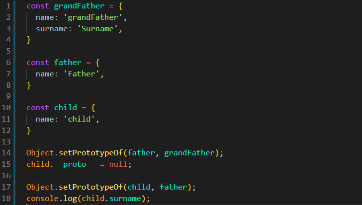

__proto__
Intro
Anteriormente vimos sobre heranca de prototipo em JS, para configura-la usamos o metodo Object.setPrototypeOf();
Anteriormente vimos sobre heranca de prototipo em JS, para configura-la usamos o metodo Object.setPrototypeOf();
JS:

Esse metodo é basicamente o mesmo que utilizarmos: Object.setPrototypeOf(child, father); porem com ele fazemos da seguinte forma: child.__proto__ = father;
Quando usamos o __proto__, estamos utilizando algo que esta dentro de nosso prototype
Em codigo real nao usamos mais o __proto__ isso pois essa propriedade esta desatualizada e nao funciona de forma confiavel.